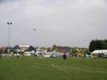
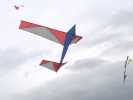
Effectivement, au matin, il faut avoir du léger ! Jean-Marc a son avion...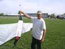
Son Albatros, plus... lourd que le mien, avec bambou, armature alu et petite queue velcrotée ne volera que plus tard dans la journée.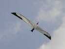
Mais quand il vole, il vole bien !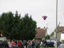
Pour occuper le terrain, montgolfières papier de Joël et de Marc. Celle de Marc est splendide ! Dommage qu'on ne les récupère pas, quelle abnégation ! Et on verra pire cet après-midi ! (à suivre)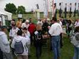
Bon, on n'a pas beaucoup volé ce matin, mais le pot est préparé, faut le boire...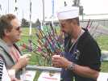
Et ensuite, déjeuner sous la tente. Les frites ne manqueront pas tout au long du week-end après réparation de la friteuse (enfin, de la prise...) !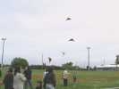
L'après-midi, le vent est encore faiblard... Les pilotables de Hurricane et de Essentiel s'en tirent à peu près et font des patrouilles mixtes, voire un mégateam... de 8 !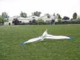
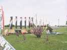
Le campement des Hurricane reste bien sûr un modèle du genre, en volume comme en ordonnancement ! Et on est toujours content de voir José !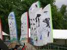
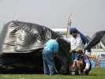
François profite du "gonfleur" de Joël pour mettre en oeuvre son chat solaire. Le gonfleur est un ventilo d'auto avec un pack batterie bien commode !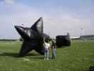
Mais le chat peine un peu à décoller, tout comme l'étoile de Marc. On ne sait pas si le vent est trop fort ou le soleil trop faible !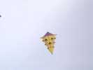
Pour rester dans les chats, ce grand cerf-volant semble montrer que c'est bien le vent qui est trop fort (pour les ballons solaires, en tout cas)...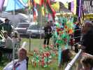
Fernando a complété sa plantation de cactus par des buissons bas et tout en fleurs !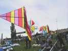
Joël a bien monté ses moulins, mais aujourd'hui, les cadences ne sont pas infernales...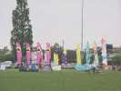
Vent de Folie a aussi amené un bel éventail de bannières et de tentes !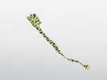
Ce tigre a avalé une commode, mais a une belle queue... tigrée (ben... évidemment !)...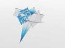
Michel a réussi à mettre en l'air son tout dernier "double square", très sobre et très beau...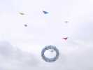
Sylvien fait voler son Jessica qui a fait plein de petits en Vendée... et tous originaux ! L'ensemble est impressionnant, le Papa a de quoi être content...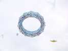
Au milieu, Hugo a monté sa dernière création, il y bosse depuis ce matin ! L'armature était faite, mais les toiles pas montées... Juste monter les barres, puis 156 ficelles et 156 noeuds à faire... sans compter le bridage !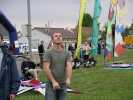
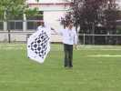
Parmi les créations de dessin, ce Rokkaku avec son damier...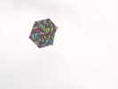
...ou celui-ci avec son pavage multicolore...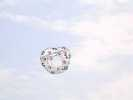
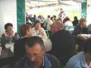
Enfin le dîner, toujours sous la tente, et toujours agrémenté de frites, on ne s'en lasse pas !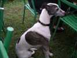
Cette mince levrette attend son heure ! Heureusement, elle court plus vite que Logos !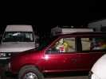
Ensuite, direction les campings-cars pour préparer le vol de nuit ! Je n'ai pas pris de photos, on avait déjà bien du mal à voler. Il s'est terminé par un feu d'artifice splendide.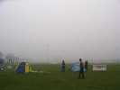
Le dimanche matin, brouillard ! Ca ne gênerait pas pour voler, sauf que brouillard = vent quasi-nul ! Alors la matinée démarre doucement...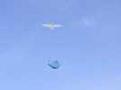
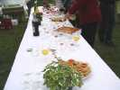
Matinée peu cervolistique, passons à l'apéritif directement. Il y a des petits friands, pas très croustillants, mais tout chauds...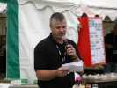
Olivier lit son discours de remerciements improvisé, pour n'oublier personne...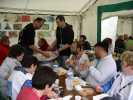
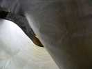
Le vent s'arrête complètement, Joël peut sortir son pingouin solaire...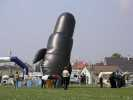
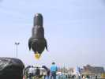
Ca y est, il vole, et bien droit, pas un poil de vent !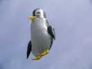
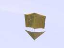
Finalement, le vent revient peu à peu, ce roller ultralight en milar pourra voler !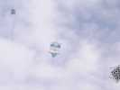
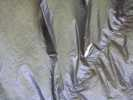
Jean-Claude va encore profiter d'une chute de vent, il veut faire de la photo sous ballon !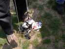
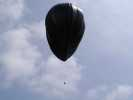
Hé bien, le ballon est monté impec, il tire assez pour l'appareil, et même plus, 7 ou 8 kg d'après Jean-Claude, c'est pas croyable !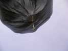
Il faut dire qu'il est gros et que le volume d'air varie comme le cube du rayon...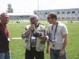
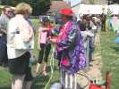
Autour du terrain, petites distractions ! Un clown prestidigitateur bénévole vient présenter ses tours en direct...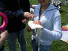
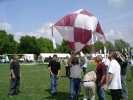
Marc va lancer une autre montgolfière en papier. Elles brûlent d'habitude 20 mn, on les perd à l'horizon. Mais il reste un peu de vent, la chauffe n'est pas facile, enfin ça a l'air d'aller...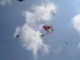
Las, à trois mètres de haut, l'enveloppe prend feu, sans doute la mèche mal centrée. Ce qui reste monte vite à 10 m, mais pas longtemps...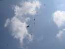
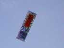
Michel va faire voler son nouveau long cerf-volant façon Edo à grand renfort d'huile de coude !